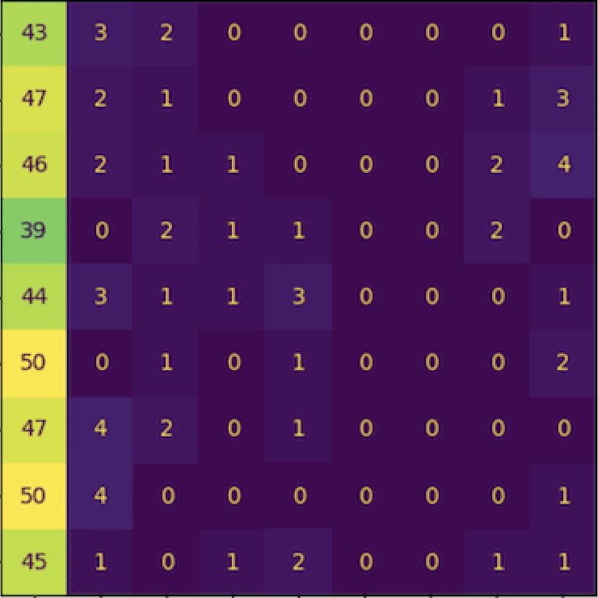
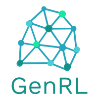
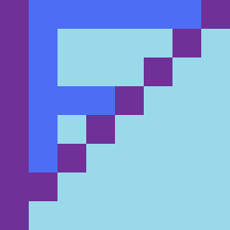
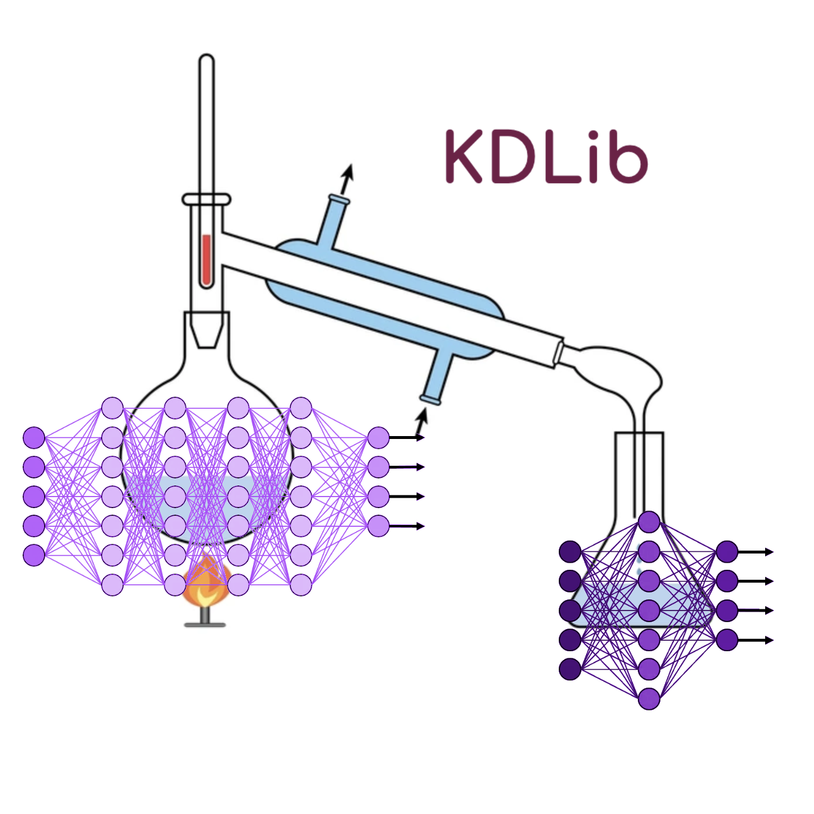
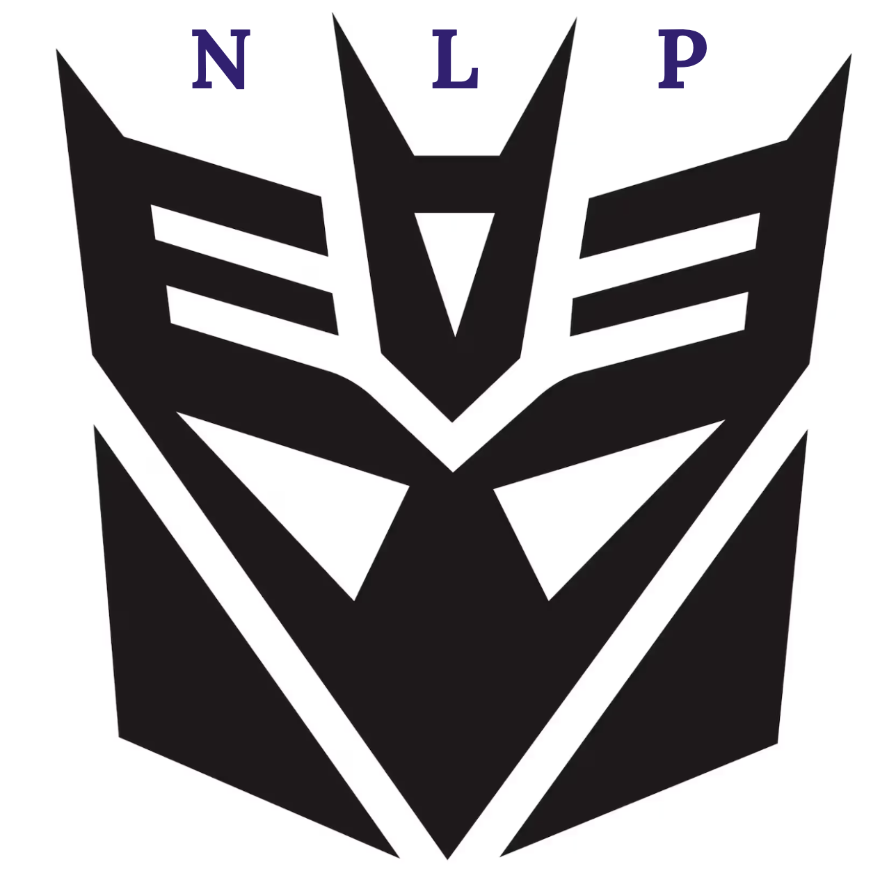

newest/featured

CountCLIP - [Re] Teaching CLIP to Count to Ten
Reproducibility study of the paper Teaching CLIP to Count to Ten, published by Google Research, in ICCV 2023.
Implementation of the paper from scratch and collected a specialized dataset to facilitate the training.
Further explorations and analysis of the paper were done, and we wrote a paper on our findings which is currently under review at ReScience C 2024.


VFormer
A modular PyTorch library for vision transformer models. Contains implementations of prominent ViT architectures broken down into modular components like encoder, attention mechanism, and decoder
Makes it easy to develop custom models by composing components of different architectures. Contains utilities for visualizing attention maps of models using techniques such as gradient rollout


DecepticoNLP
DecepticoNLP is a Python Library for Robustness Monitoring and Adversarial Debugging of NLP models.
[github]
DeepTime
An exploratory and experimental research into the applications of modern deep learning breakthroughs in traditional time-series analysis approaches.
ADReSS
Alzheimer's Dementia Recognition from Spontaneous Speech. The aim is unbiased early detection of cognitive decline from multi-modal data.
IKD-DAFL
DAFL (Data free learning) is an unsupervised Knowledge Distillation technique. We are trying to apply IKD on this technique for smaller datasets as of now like MNIST/CIFAR.
Playground
A python library consisting of pipelines for visual analysis of different sports using Computer Vision and Deep Learning.
[github]
Neural Correlates for Reinforcement Learning
A review of the connections between neuroscience and reinforcement learning.
SNNs to Validate Experimental Results
Building computational spiking neural network models to model neural functioning and thereby validate experimental results.